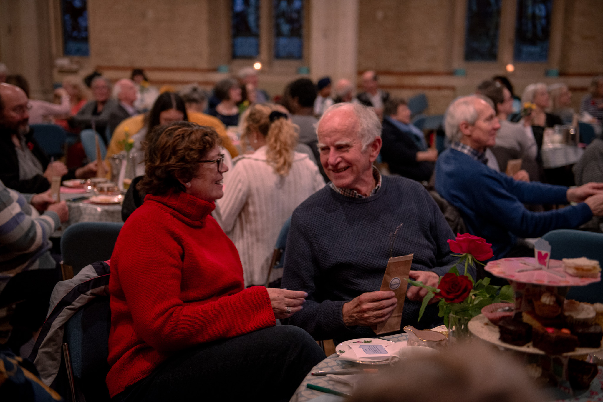
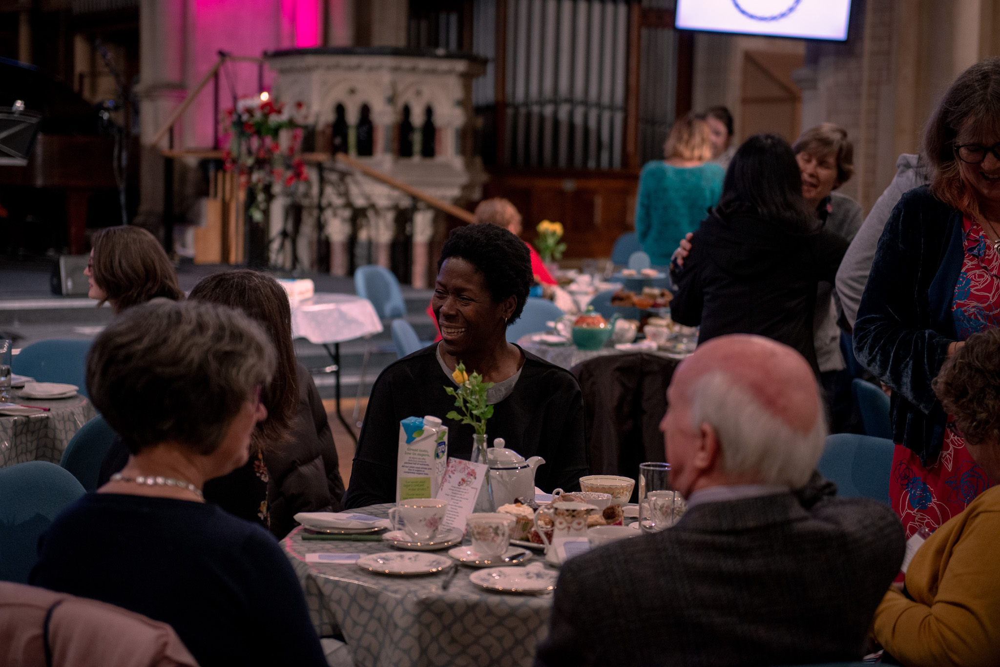
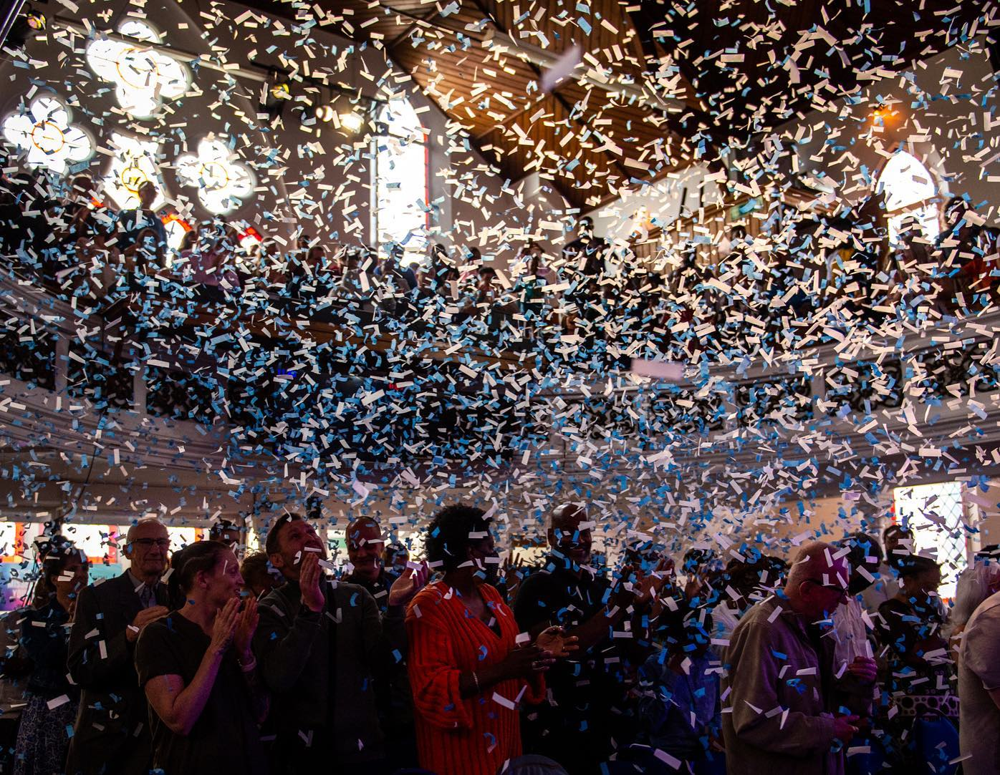
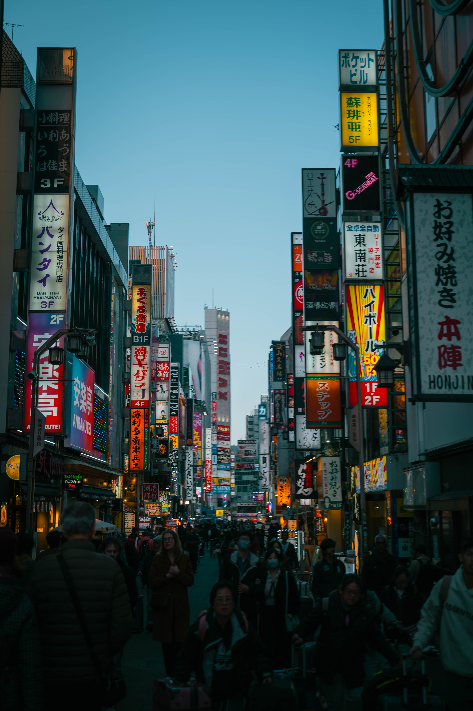
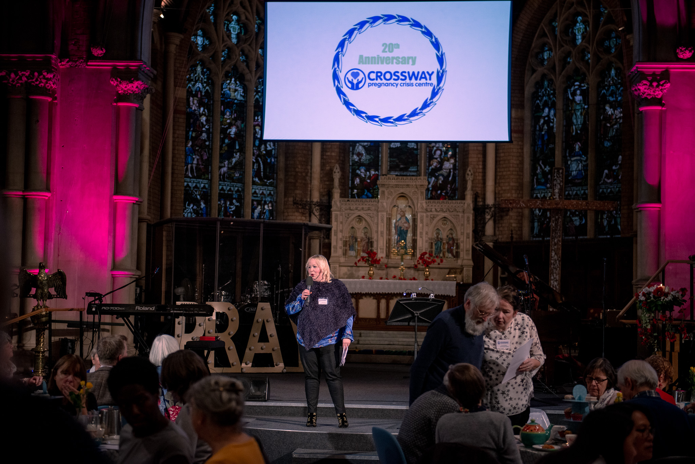
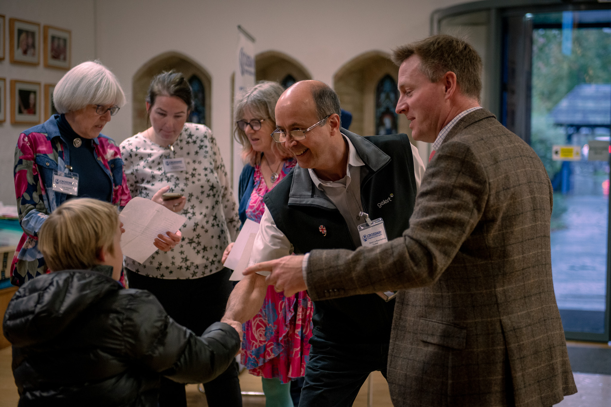
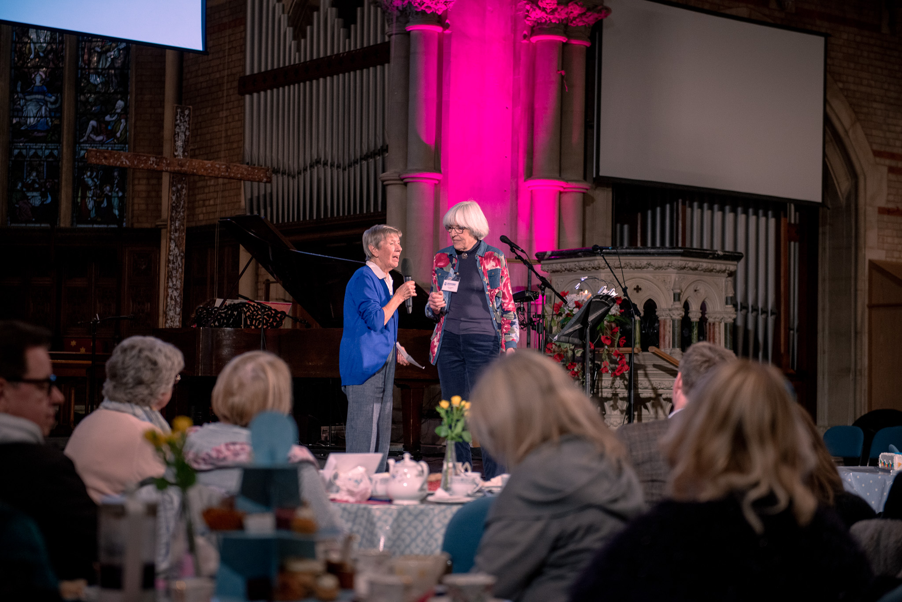
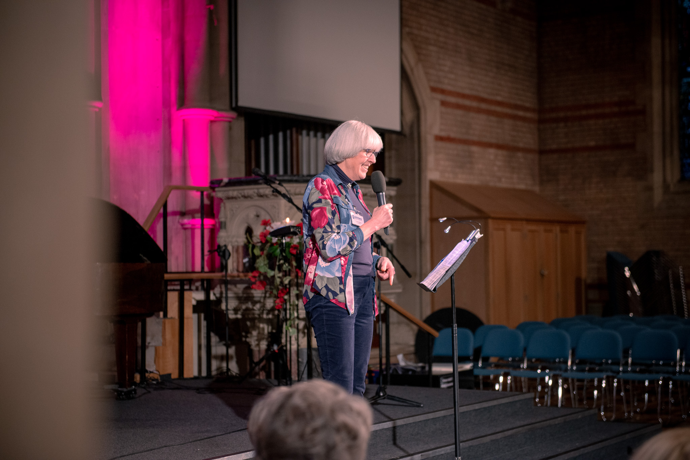

Portfolio
Photography
A selection of photography across weddings, events, travel, and documentary moments.























Portfolio
A selection of photography across weddings, events, travel, and documentary moments.







